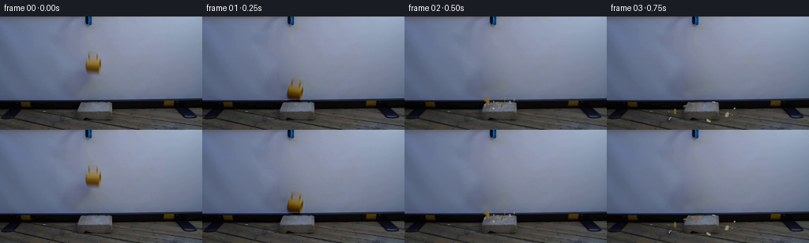
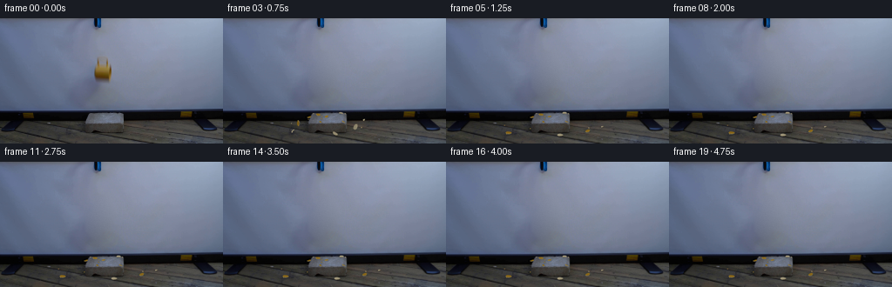
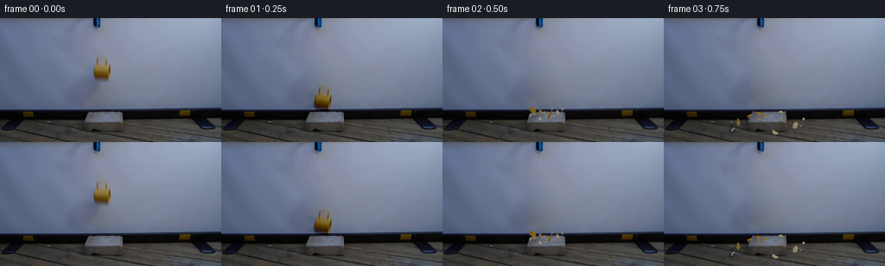
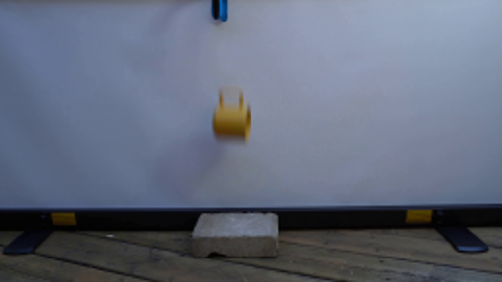
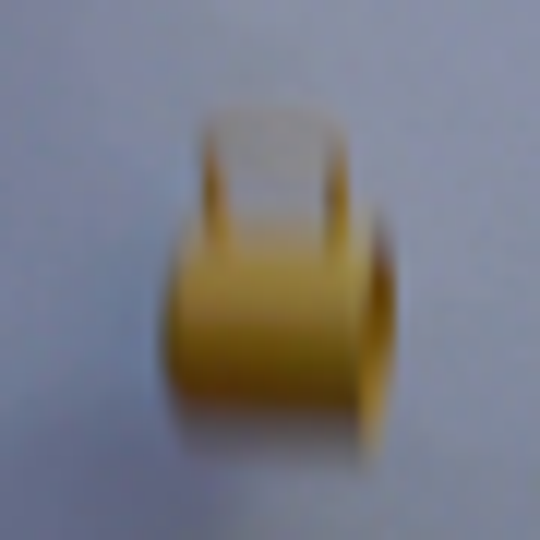
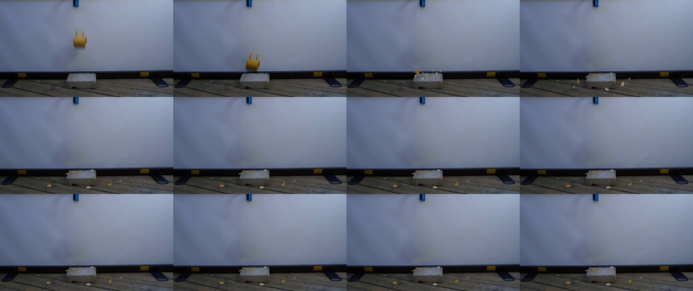
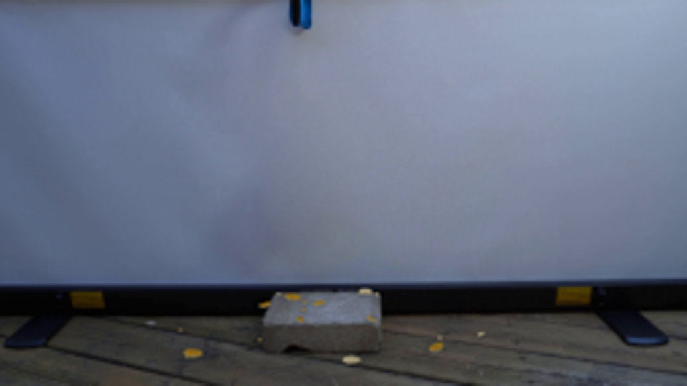

CODING AGENTS AS PIXEL WORLD MODELS
traex/GPT-6.1-Sol · 0125
点击播放 · 原生 RGB 像素
逐轮保存的候选
回放视频、检查图与代码变化。
每份候选均可单独播放。实际图片检查记录在下方工具轨迹中。
候选 01播放与检查图
点击播放 · 原生 RGB 像素


展开代码变化
--- 上一保存版本
+++ 本次保存版本
@@ -0,0 +1,275 @@
+from pathlib import Path
+import math
+import numpy as np
+from PIL import Image, ImageDraw, ImageFilter
+import cv2
+from artifact_io import save
+
+ROOT=Path(__file__).resolve().parent
+W,H=256,144
+S=4
+rng=np.random.default_rng(25)
+source=np.asarray(Image.open(ROOT/'first_frame.png').convert('RGB'))
+
+# Restore the small area of screen formerly occupied by the released cup.
+mask=np.zeros((H,W),np.uint8)
+cv2.ellipse(mask,(118,59),(14,20),0,0,360,255,-1)
+cv2.ellipse(mask,(107,73),(10,18),-12,0,360,255,-1)
+background=cv2.inpaint(source,mask,5,cv2.INPAINT_TELEA)
+# The projection surface is diffuse: fit its gently varying illumination across
+# the restored area, retaining the natural mottling outside the repair.
+yy,xx=np.mgrid[:H,:W]
+region=(xx>85)&(xx<148)&(yy>30)&(yy<94)
+known=region&(mask==0)
+x=(xx-118)/35.; y=(yy-61)/35.
+terms=np.stack([np.ones_like(x),x,y,x*x,x*y,y*y,x*x*x,x*x*y,x*y*y,y*y*y],axis=-1)
+coeff=np.linalg.lstsq(terms[known],source[known].astype(float),rcond=None)[0]
+fit=terms@coeff
+repair=cv2.GaussianBlur(mask.astype(float)/255,(0,0),1.7)
+noise=rng.normal(0,.7,(H,W,1))
+background=np.clip(source*(1-repair[...,None])+(fit+noise)*repair[...,None],0,255).astype(np.uint8)
+# Preserve all untouched parts of the locked-off photograph exactly.
+background[repair<.0001]=source[repair<.0001]
+
+# Photographic cup texture, with its soft original motion edges. The hollow
+# handle area contains only the reconstructed projection screen.
+alpha=np.zeros((H,W),np.float32)
+outline=np.array([[112,43],[120,43],[124,45],[125,52],[128,55],[129,63],[128,72],
+ [124,75],[110,72],[107,66],[108,56],[110,53],[111,46]],np.int32)
+cv2.fillPoly(alpha,[outline],1)
+alpha=cv2.GaussianBlur(alpha,(0,0),.9)
+cup_delta=(source.astype(float)-background.astype(float))*alpha[...,None]
+shadow_delta=(source.astype(float)-background.astype(float))*(1-alpha[...,None])*repair[...,None]
+
+IMPACT=.291
+G=338.
+
+# Small rigid ceramic shells, expressed analytically in pixel-scale world units.
+# X is image horizontal, Y altitude, and Z distance towards the screen.
+class Shard:
+ def __init__(self,idx,w,d,xvel,zvel,yvel,kind='shell',white=False):
+ self.idx=idx; self.kind=kind; self.w=w; self.d=d; self.white=white
+ self.x=118+rng.uniform(-3,3);self.z=12+rng.uniform(-3,3)
+ self.h=11.6+rng.uniform(.3,2.5)
+ self.vx=xvel;self.vz=zvel;self.vh=yvel
+ self.start_angles=rng.uniform(-2.1,2.1,3)
+ self.spin=rng.uniform(-10,10,3)
+ self.rest_angles=np.array([rng.uniform(-.18,.18),rng.uniform(-math.pi,math.pi),rng.uniform(-.18,.18)])
+ if white:self.rest_angles[2]+=math.pi
+ self.first_hit=None;self.stop=None
+ self.states=[]
+ self.color=np.array([150,113,29.])+rng.uniform(-10,10)
+ self.make_mesh()
+ def make_mesh(self):
+ if self.kind=='handle':
+ # A broken section of the ceramic loop, not a straight splinter.
+ a=np.linspace(-1.15,1.05,9)
+ r=self.w/2
+ outer=np.c_[r*np.cos(a),np.zeros(len(a)),r*np.sin(a)]
+ inner=np.c_[(r-1.25)*np.cos(a),np.zeros(len(a)),(r-1.25)*np.sin(a)]
+ self.ring=np.vstack([outer,inner[::-1]])
+ self.ring[:,0]-=self.ring[:,0].mean()
+ self.ring[:,2]-=self.ring[:,2].mean()
+ else:
+ n=7 if self.kind!='chip' else 4
+ a=np.linspace(0,2*np.pi,n,endpoint=False)+rng.uniform(-.1,.1,n)
+ r=rng.uniform(.78,1.03,n)
+ u=np.cos(a)*r*self.w/2
+ v=np.sin(a)*r*self.d/2
+ curvature=.55 if self.kind=='shell' else .10
+ h=curvature*(u/(self.w/2))**2
+ self.ring=np.stack([u,h,v],axis=-1)
+ self.center=np.array([0,.12,0.])
+ self.thick=.45 if self.kind!='chip' else .3
+ def ground(self):
+ return 10.6 if 98<self.x<141 and 0<self.z<31 else 0.
+ def advance(self,t,dt):
+ self.vh-=G*dt
+ self.x+=self.vx*dt;self.z+=self.vz*dt;self.h+=self.vh*dt
+ floor=self.ground()+.55
+ if self.h<floor and self.vh<0:
+ self.h=floor
+ if self.first_hit is None:self.first_hit=t
+ if abs(self.vh)>10:
+ self.vh=-self.vh*.19
+ self.vx*=.63;self.vz*=.57
+ else:
+ self.vh=0
+ friction=max(0,1-15*dt)
+ self.vx*=friction;self.vz*=friction
+ if abs(self.vx)+abs(self.vz)<1:
+ self.vx=self.vz=0
+ if self.stop is None:self.stop=t
+ elif self.first_hit is not None and self.h<floor+.12 and self.vh<1:
+ self.vx*=max(0,1-12*dt);self.vz*=max(0,1-12*dt)
+ def state(self,t):
+ if self.first_hit is None:
+ a=self.start_angles+self.spin*t
+ else:
+ hit=self.first_hit
+ af=self.start_angles+self.spin*hit
+ q=min(1,max(0,(t-hit)/.19))
+ q=q*q*(3-2*q)
+ # Rotate onto the supporting surface after the inelastic bounce.
+ a=af*(1-q)+self.rest_angles*q
+ return self.x,self.h,self.z,a.copy()
+
+specs=[
+ (8.3,6.2,-72,-25,69,'shell',False),
+ (8.0,5.6,73,-16,57,'shell',False),
+ (7.4,6.6,23,-38,51,'shell',True),
+ (6.7,4.7,-25,29,48,'shell',False),
+ (5.6,4.3,8,9,45,'base',False),
+ (5.8,3.8,43,26,58,'shell',True),
+ (5.5,3.1,-59,12,39,'shell',False),
+ (6.1,3.9,-87,-23,55,'handle',False),
+ (5.3,3.5,64,-27,49,'handle',False),
+ (3.8,3.1,-12,-40,36,'shell',False),
+ (3.8,3.0,92,4,68,'shell',True),
+]
+shards=[Shard(i,*s) for i,s in enumerate(specs)]
+for j in range(8):
+ shards.append(Shard(11+j,rng.uniform(1.6,2.8),rng.uniform(1.3,2.4),
+ rng.uniform(-98,105),rng.uniform(-34,38),rng.uniform(23,62),'chip',j%3==0))
+# Integrate at much finer resolution than the exposure cadence.
+for sh in shards:
+ elapsed=0
+ for k in range(20):
+ target=max(0,k/4-IMPACT)
+ while elapsed<target-1e-8:
+ dt=min(.002,target-elapsed)
+ elapsed+=dt;sh.advance(elapsed,dt)
+ sh.states.append(sh.state(target))
+
+
+def rotation(a):
+ ax,ay,az=a;cx,sx=np.cos(ax),np.sin(ax);cy,sy=np.cos(ay),np.sin(ay);cz,sz=np.cos(az),np.sin(az)
+ rx=np.array([[1,0,0],[0,cx,-sx],[0,sx,cx]])
+ ry=np.array([[cy,0,sy],[0,1,0],[-sy,0,cy]])
+ rz=np.array([[cz,-sz,0],[sz,cz,0],[0,0,1]])
+ return rz@ry@rx
+
+
+def project(v):
+ return np.stack([v[:,0],131-v[:,1]-.45*v[:,2]],axis=1)
+
+
+def triangle(canvas,zbuf,p,world,color):
+ p=p*S
+ xmin=max(0,int(np.floor(p[:,0].min())));xmax=min(W*S-1,int(np.ceil(p[:,0].max())))
+ ymin=max(0,int(np.floor(p[:,1].min())));ymax=min(H*S-1,int(np.ceil(p[:,1].max())))
+ if xmin>xmax or ymin>ymax:return
+ a,b,c=p
+ den=(b[1]-c[1])*(a[0]-c[0])+(c[0]-b[0])*(a[1]-c[1])
+ if abs(den)<.001:return
+ y,x=np.mgrid[ymin:ymax+1,xmin:xmax+1];x=x+.5;y=y+.5
+ u=((b[1]-c[1])*(x-c[0])+(c[0]-b[0])*(y-c[1]))/den
+ v=((c[1]-a[1])*(x-c[0])+(a[0]-c[0])*(y-c[1]))/den
+ q=1-u-v
+ good=(u>=0)&(v>=0)&(q>=0)
+ # Larger depth means nearer the camera, accounting for height.
+ depth=-world[:,2]+world[:,1]*.35
+ z=u*depth[0]+v*depth[1]+q*depth[2]
+ zz=zbuf[ymin:ymax+1,xmin:xmax+1]
+ good &= z>zz
+ zz[good]=z[good]
+ out=canvas[ymin:ymax+1,xmin:xmax+1]
+ texture=.98+.015*np.sin(x*1.7+y*.9)+.014*np.cos(x*.82-y*1.53)
+ colors=np.clip(texture[...,None]*color,0,255)
+ out[good]=colors[good]
+
+
+def render_shard(canvas,zbuf,sh,state):
+ X,Y,Z,a=state
+ R=rotation(a)
+ top=sh.ring.copy();bot=sh.ring.copy();bot[:,1]-=sh.thick
+ vertices=np.vstack([sh.center,top,sh.center-[0,sh.thick,0],bot])
+ vertices=vertices@R.T+np.array([X,Y,Z])
+ n=len(top);lower=n+1
+ faces=[]
+ if sh.kind=='handle':
+ # Use quadrilaterals along the strip rather than closing across its gap.
+ m=n//2
+ for j in range(m-1):
+ for ids in [(1+j,1+j+1,1+n-2-j),(1+j,1+n-2-j,1+n-1-j)]:
+ faces.append((ids,'outer'))
+ faces.append((tuple(k+lower for k in ids),'inner'))
+ else:
+ for j in range(n):
+ faces.append(((0,1+j,1+(j+1)%n),'outer'))
+ faces.append(((lower,lower+1+(j+1)%n,lower+1+j),'inner'))
+ for j in range(n):
+ k=(j+1)%n
+ faces.extend([((1+j,lower+1+j,lower+1+k),'edge'),((1+j,lower+1+k,1+k),'edge')])
+ for ids,side in faces:
+ w=vertices[list(ids)]
+ normal=np.cross(w[1]-w[0],w[2]-w[0]);norm=np.linalg.norm(normal)
+ if norm<1e-6:continue
+ normal/=norm
+ illum=.68+.30*abs(np.dot(normal,np.array([-.35,.80,-.45])))
+ if side=='outer':base=sh.color
+ elif side=='inner':base=np.array([177,166,134])
+ else:base=np.array([181,167,128])
+ triangle(canvas,zbuf,project(w),w,base*illum)
+
+
+def composite_shards(base,k):
+ high=np.asarray(Image.fromarray(base).resize((W*S,H*S),Image.Resampling.BICUBIC)).astype(float)
+ # Contact and airborne shadows on the floor, soft and unobtrusive.
+ shade=Image.new('L',(W*S,H*S),0);d=ImageDraw.Draw(shade)
+ for sh in shards:
+ x,h,z,a=sh.states[k]
+ support=10.6 if 98<x<141 and 0<z<31 else 0
+ gy=131-support-.45*z
+ elev=max(0,h-support)
+ wid=sh.w*.54+elev*.025
+ opacity=int(54*np.exp(-elev/18))
+ d.ellipse(((x-wid)*S,(gy-1.1)*S,(x+wid)*S,(gy+1.1)*S),fill=opacity)
+ shad=np.asarray(shade.filter(ImageFilter.GaussianBlur(.65*S)))/255
+ high*=1-shad[...,None]*.60
+ zbuf=np.full((H*S,W*S),-1e10)
+ # Concrete occludes fragments which pass behind its far edge.
+ sy,sx=np.mgrid[:H*S,:W*S];sx=sx/S;sy=sy/S
+ brick=(sx>98)&(sx<142)&(sy>121)&(sy<130)
+ zbuf[brick]=0.
+ for sh in shards:
+ render_shard(high,zbuf,sh,sh.states[k])
+ image=Image.fromarray(np.clip(high,0,255).astype(np.uint8))
+ image=image.filter(ImageFilter.GaussianBlur(.20*S)).resize((W,H),Image.Resampling.LANCZOS)
+ # Only replace the composited region. Keep the laboratory and the tool stable.
+ out=base.copy();im=np.asarray(image)
+ changed=np.abs(im.astype(int)-base.astype(int)).max(axis=2)>2
+ # An area around the fragments accommodates their soft contact shadows.
+ out[changed & (yy>83)]=im[changed & (yy>83)]
+ return out
+
+frames=[]
+for k in range(20):
+ if k==0:
+ frames.append(source.copy());continue
+ t=k/4
+ if t<IMPACT:
+ frame=background.astype(float).copy()
+ delta=95*t+.5*G*t*t
+ angle=-9*(t/IMPACT)
+ M=cv2.getRotationMatrix2D((118,59),angle,1)
+ M[0,2]+=-1.3*t;M[1,2]+=delta
+ moved=cv2.warpAffine(cup_delta.astype(np.float32),M,(W,H),flags=cv2.INTER_CUBIC)
+ # The cup's screen shadow follows the descent until it reaches the screen border.
+ Ms=np.float32([[1,0,-2*t],[0,1,delta*.86]])
+ shadow=cv2.warpAffine(shadow_delta.astype(np.float32),Ms,(W,H),flags=cv2.INTER_LINEAR)
+ shadow[yy>=105]=0
+ frame+=moved+shadow
+ # Growing local shadow over the concrete immediately before contact.
+ contact=np.exp(-((xx-118)/9)**2-((yy-114)/2.5)**2)*.10
+ frame*=1-contact[...,None]
+ frames.append(np.clip(frame,0,255).astype(np.uint8))
+ else:
+ frames.append(composite_shards(background,k))
+frames=np.stack(frames)
+save(frames,ROOT)
+# A compact, early-time view for local quality inspection.
+contact=Image.new('RGB',(256*4,144*3))
+for i in range(12):contact.paste(Image.fromarray(frames[i]),((i%4)*256,(i//4)*144))
+contact.save(ROOT/'.tmp/contact.png')
+Image.fromarray(background).save(ROOT/'.tmp/background.png')
候选 02播放与检查图
点击播放 · 原生 RGB 像素

展开代码变化
--- 上一保存版本
+++ 本次保存版本
@@ -48,13 +48,13 @@
# X is image horizontal, Y altitude, and Z distance towards the screen.
class Shard:
def __init__(self,idx,w,d,xvel,zvel,yvel,kind='shell',white=False):
- self.idx=idx; self.kind=kind; self.w=w; self.d=d; self.white=white
+ self.idx=idx; self.kind=kind; self.w=w*1.18; self.d=d*1.23; self.white=white
self.x=118+rng.uniform(-3,3);self.z=12+rng.uniform(-3,3)
self.h=11.6+rng.uniform(.3,2.5)
self.vx=xvel;self.vz=zvel;self.vh=yvel
self.start_angles=rng.uniform(-2.1,2.1,3)
self.spin=rng.uniform(-10,10,3)
- self.rest_angles=np.array([rng.uniform(-.18,.18),rng.uniform(-math.pi,math.pi),rng.uniform(-.18,.18)])
+ self.rest_angles=np.array([rng.uniform(-.42,.42),rng.uniform(-math.pi,math.pi),rng.uniform(-.35,.35)])
if white:self.rest_angles[2]+=math.pi
self.first_hit=None;self.stop=None
self.states=[]
@@ -76,11 +76,11 @@
r=rng.uniform(.78,1.03,n)
u=np.cos(a)*r*self.w/2
v=np.sin(a)*r*self.d/2
- curvature=.55 if self.kind=='shell' else .10
+ curvature=1.5 if self.kind=='shell' else .16
h=curvature*(u/(self.w/2))**2
self.ring=np.stack([u,h,v],axis=-1)
self.center=np.array([0,.12,0.])
- self.thick=.45 if self.kind!='chip' else .3
+ self.thick=.65 if self.kind!='chip' else .35
def ground(self):
return 10.6 if 98<self.x<141 and 0<self.z<31 else 0.
def advance(self,t,dt):
@@ -184,7 +184,11 @@
R=rotation(a)
top=sh.ring.copy();bot=sh.ring.copy();bot[:,1]-=sh.thick
vertices=np.vstack([sh.center,top,sh.center-[0,sh.thick,0],bot])
- vertices=vertices@R.T+np.array([X,Y,Z])
+ vertices=vertices@R.T
+ # A rested curved shell is supported on its lowest fractured edge.
+ if sh.first_hit is not None and k_time_for_render > sh.first_hit+.22:
+ Y += max(0,.35-vertices[:,1].min())
+ vertices=vertices+np.array([X,Y,Z])
n=len(top);lower=n+1
faces=[]
if sh.kind=='handle':
@@ -214,6 +218,8 @@
def composite_shards(base,k):
+ global k_time_for_render
+ k_time_for_render=max(0,k/4-IMPACT)
high=np.asarray(Image.fromarray(base).resize((W*S,H*S),Image.Resampling.BICUBIC)).astype(float)
# Contact and airborne shadows on the floor, soft and unobtrusive.
shade=Image.new('L',(W*S,H*S),0);d=ImageDraw.Draw(shade)
候选 03播放与检查图
候选 04播放与检查图
点击播放 · 原生 RGB 像素


展开代码变化
--- 上一保存版本
+++ 本次保存版本
@@ -179,14 +179,14 @@
out[good]=colors[good]
-def render_shard(canvas,zbuf,sh,state):
+def render_shard(canvas,zbuf,sh,state,elapsed):
X,Y,Z,a=state
R=rotation(a)
top=sh.ring.copy();bot=sh.ring.copy();bot[:,1]-=sh.thick
vertices=np.vstack([sh.center,top,sh.center-[0,sh.thick,0],bot])
vertices=vertices@R.T
# A rested curved shell is supported on its lowest fractured edge.
- if sh.first_hit is not None and k_time_for_render > sh.first_hit+.22:
+ if sh.first_hit is not None and elapsed > sh.first_hit+.22:
Y += max(0,.35-vertices[:,1].min())
vertices=vertices+np.array([X,Y,Z])
n=len(top);lower=n+1
@@ -218,8 +218,7 @@
def composite_shards(base,k):
- global k_time_for_render
- k_time_for_render=max(0,k/4-IMPACT)
+ elapsed=max(0,k/4-IMPACT)
high=np.asarray(Image.fromarray(base).resize((W*S,H*S),Image.Resampling.BICUBIC)).astype(float)
# Contact and airborne shadows on the floor, soft and unobtrusive.
shade=Image.new('L',(W*S,H*S),0);d=ImageDraw.Draw(shade)
@@ -239,7 +238,7 @@
brick=(sx>98)&(sx<142)&(sy>121)&(sy<130)
zbuf[brick]=0.
for sh in shards:
- render_shard(high,zbuf,sh,sh.states[k])
+ render_shard(high,zbuf,sh,sh.states[k],elapsed)
image=Image.fromarray(np.clip(high,0,255).astype(np.uint8))
image=image.filter(ImageFilter.GaussianBlur(.20*S)).resize((W,H),Image.Resampling.LANCZOS)
# Only replace the composited region. Keep the laboratory and the tool stable.
可观测工具轨迹
实际执行的命令与返回图片。
命令 1exit 0
/bin/bash -lc 'ls -la && cat prompt.txt && cat GENERATION_RULES.md'
命令 2exit 0
/bin/bash -lc "cat artifact_io.py && python - <<'PY'
from PIL import Image
im=Image.open('first_frame.png');print(im.size)
im.resize((1024,576)).save('.tmp/first_zoom.png')
PY"命令 3exit 0
/bin/bash -lc "python - <<'PY'
from PIL import Image
im=Image.open('first_frame.png');im.crop((95,35,140,80)).resize((540,540)).save('.tmp/mug.png')
PY"命令 4exit 0
/bin/bash -lc "python - <<'PY'
import scipy, cv2
print('ok')
PY"命令 5exit 0
/bin/bash -lc "python - <<'PY'
import numpy as np
from PIL import Image
im=np.array(Image.open('first_frame.png'))
for y in [35,40,45,50,55,60,65,70,75,80]:
print(y,[(x,im[y,x].tolist()) for x in [100,104,107,110,113,117,122,126,130,134,138]])
PY"命令 6exit 0
/bin/bash -lc "cat > generate.py <<'PY'
from pathlib import Path
import math
import numpy as np
from PIL import Image, ImageDraw, ImageFilter
import cv2
from artifact_io import save
ROOT=Path(__file__).resolve().parent
W,H=256,144
S=4
rng=np.random.default_rng(25)
source=np.asarray(Image.open(ROOT/'first_frame.png').convert('RGB'))
# Restore the small area of screen formerly occupied by the released cup.
mask=np.zeros((H,W),np.uint8)
cv2.ellipse(mask,(118,59),(14,20),0,0,360,255,-1)
cv2.ellipse(mask,(107,73),(10,18),-12,0,360,255,-1)
background=cv2.inpaint(source,mask,5,cv2.INPAINT_TELEA)
# The projection surface is diffuse: fit its gently varying illumination across
# the restored area, retaining the natural mottling outside the repair.
yy,xx=np.mgrid[:H,:W]
region=(xx>85)&(xx<148)&(yy>30)&(yy<94)
known=region&(mask==0)
x=(xx-118)/35.; y=(yy-61)/35.
terms=np.stack([np.ones_like(x),x,y,x*x,x*y,y*y,x*x*x,x*x*y,x*y*y,y*y*y],axis=-1)
coeff=np.linalg.lstsq(terms[known],source[known].astype(float),rcond=None)[0]
fit=terms@coeff
repair=cv2.GaussianBlur(mask.astype(float)/255,(0,0),1.7)
noise=rng.normal(0,.7,(H,W,1))
background=np.clip(source*(1-repair[...,None])+(fit+noise)*repair[...,None],0,255).astype(np.uint8)
# Preserve all untouched parts of the locked-off photograph exactly.
background[repair<.0001]=source[repair<.0001]
# Photographic cup texture, with its soft original motion edges. The hollow
# handle area contains only the reconstructed projection screen.
alpha=np.zeros((H,W),np.float32)
outline=np.array([[112,43],[120,43],[124,45],[125,52],[128,55],[129,63],[128,72],
[124,75],[110,72],[107,66],[108,56],[110,53],[111,46]],np.int32)
cv2.fillPoly(alpha,[outline],1)
alpha=cv2.GaussianBlur(alpha,(0,0),.9)
cup_delta=(source.astype(float)-background.astype(float))*alpha[...,None]
shadow_delta=(source.astype(float)-background.astype(float))*(1-alpha[...,None])*repair[...,None]
IMPACT=.291
G=338.
# Small rigid ceramic shells, expressed analytically in pixel-scale world units.
# X is image horizontal, Y altitude, and Z distance towards the screen.
class Shard:
def __init__(self,idx,w,d,xvel,zvel,yvel,kind='shell',white=False):
self.idx=idx; self.kind=kind; self.w=w; self.d=d; self.white=white
self.x=118+rng.uniform(-3,3);self.z=12+rng.uniform(-3,3)
self.h=11.6+rng.uniform(.3,2.5)
self.vx=xvel;self.vz=zvel;self.vh=yvel
self.start_angles=rng.uniform(-2.1,2.1,3)
self.spin=rng.uniform(-10,10,3)
self.rest_angles=np.array([rng.uniform(-.18,.18),rng.uniform(-math.pi,math.pi),rng.uniform(-.18,.18)])
if white:self.rest_angles[2]+=math.pi
self.first_hit=None;self.stop=None
self.states=[]
self.color=np.array([150,113,29.])+rng.uniform(-10,10)
self.make_mesh()
def make_mesh(self):
if self.kind=='handle':
# A broken section of the ceramic loop, not a straight splinter.
a=np.linspace(-1.15,1.05,9)
r=self.w/2
outer=np.c_[r*np.cos(a),np.zeros(len(a)),r*np.sin(a)]
inner=np.c_[(r-1.25)*np.cos(a),np.zeros(len(a)),(r-1.25)*np.sin(a)]
self.ring=np.vstack([outer,inner[::-1]])
self.ring[:,0]-=self.ring[:,0].mean()
self.ring[:,2]-=self.ring[:,2].mean()
else:
n=7 if self.kind"'!='"'chip' else 4
a=np.linspace(0,2*np.pi,n,endpoint=False)+rng.uniform(-.1,.1,n)
r=rng.uniform(.78,1.03,n)
u=np.cos(a)*r*self.w/2
v=np.sin(a)*r*self.d/2
curvature=.55 if self.kind=='shell' else .10
h=curvature*(u/(self.w/2))**2
self.ring=np.stack([u,h,v],axis=-1)
self.center=np.array([0,.12,0.])
self.thick=.45 if self.kind"'!='"'chip' else .3
def ground(self):
return 10.6 if 98<self.x<141 and 0<self.z<31 else 0.
def advance(self,t,dt):
self.vh-=G*dt
self.x+=self.vx*dt;self.z+=self.vz*dt;self.h+=self.vh*dt
floor=self.ground()+.55
if self.h<floor and self.vh<0:
self.h=floor
if self.first_hit is None:self.first_hit=t
if abs(self.vh)>10:
self.vh=-self.vh*.19
self.vx*=.63;self.vz*=.57
else:
self.vh=0
friction=max(0,1-15*dt)
self.vx*=friction;self.vz*=friction
if abs(self.vx)+abs(self.vz)<1:
self.vx=self.vz=0
if self.stop is None:self.stop=t
elif self.first_hit is not None and self.h<floor+.12 and self.vh<1:
self.vx*=max(0,1-12*dt);self.vz*=max(0,1-12*dt)
def state(self,t):
if self.first_hit is None:
a=self.start_angles+self.spin*t
else:
hit=self.first_hit
af=self.start_angles+self.spin*hit
q=min(1,max(0,(t-hit)/.19))
q=q*q*(3-2*q)
# Rotate onto the supporting surface after the inelastic bounce.
a=af*(1-q)+self.rest_angles*q
return self.x,self.h,self.z,a.copy()
specs=[
(8.3,6.2,-72,-25,69,'shell',False),
(8.0,5.6,73,-16,57,'shell',False),
(7.4,6.6,23,-38,51,'shell',True),
(6.7,4.7,-25,29,48,'shell',False),
(5.6,4.3,8,9,45,'base',False),
(5.8,3.8,43,26,58,'shell',True),
(5.5,3.1,-59,12,39,'shell',False),
(6.1,3.9,-87,-23,55,'handle',False),
(5.3,3.5,64,-27,49,'handle',False),
(3.8,3.1,-12,-40,36,'shell',False),
(3.8,3.0,92,4,68,'shell',True),
]
shards=[Shard(i,*s) for i,s in enumerate(specs)]
for j in range(8):
shards.append(Shard(11+j,rng.uniform(1.6,2.8),rng.uniform(1.3,2.4),
rng.uniform(-98,105),rng.uniform(-34,38),rng.uniform(23,62),'chip',j%3==0))
# Integrate at much finer resolution than the exposure cadence.
for sh in shards:
elapsed=0
for k in range(20):
target=max(0,k/4-IMPACT)
while elapsed<target-1e-8:
dt=min(.002,target-elapsed)
elapsed+=dt;sh.advance(elapsed,dt)
sh.states.append(sh.state(target))
def rotation(a):
ax,ay,az=a;cx,sx=np.cos(ax),np.sin(ax);cy,sy=np.cos(ay),np.sin(ay);cz,sz=np.cos(az),np.sin(az)
rx=np.array([[1,0,0],[0,cx,-sx],[0,sx,cx]])
ry=np.array([[cy,0,sy],[0,1,0],[-sy,0,cy]])
rz=np.array([[cz,-sz,0],[sz,cz,0],[0,0,1]])
return rz@ry@rx
def project(v):
return np.stack([v[:,0],131-v[:,1]-.45*v[:,2]],axis=1)
def triangle(canvas,zbuf,p,world,color):
p=p*S
xmin=max(0,int(np.floor(p[:,0].min())));xmax=min(W*S-1,int(np.ceil(p[:,0].max())))
ymin=max(0,int(np.floor(p[:,1].min())));ymax=min(H*S-1,int(np.ceil(p[:,1].max())))
if xmin>xmax or ymin>ymax:return
a,b,c=p
den=(b[1]-c[1])*(a[0]-c[0])+(c[0]-b[0])*(a[1]-c[1])
if abs(den)<.001:return
y,x=np.mgrid[ymin:ymax+1,xmin:xmax+1];x=x+.5;y=y+.5
u=((b[1]-c[1])*(x-c[0])+(c[0]-b[0])*(y-c[1]))/den
v=((c[1]-a[1])*(x-c[0])+(a[0]-c[0])*(y-c[1]))/den
q=1-u-v
good=(u>=0)&(v>=0)&(q>=0)
# Larger depth means nearer the camera, accounting for height.
depth=-world[:,2]+world[:,1]*.35
z=u*depth[0]+v*depth[1]+q*depth[2]
zz=zbuf[ymin:ymax+1,xmin:xmax+1]
good &= z>zz
zz[good]=z[good]
out=canvas[ymin:ymax+1,xmin:xmax+1]
texture=.98+.015*np.sin(x*1.7+y*.9)+.014*np.cos(x*.82-y*1.53)
colors=np.clip(texture[...,None]*color,0,255)
out[good]=colors[good]
def render_shard(canvas,zbuf,sh,state):
X,Y,Z,a=state
R=rotation(a)
top=sh.ring.copy();bot=sh.ring.copy();bot[:,1]-=sh.thick
vertices=np.vstack([sh.center,top,sh.center-[0,sh.thick,0],bot])
vertices=vertices@R.T+np.array([X,Y,Z])
n=len(top);lower=n+1
faces=[]
if sh.kind=='handle':
# Use quadrilaterals along the strip rather than closing across its gap.
m=n//2
for j in range(m-1):
for ids in [(1+j,1+j+1,1+n-2-j),(1+j,1+n-2-j,1+n-1-j)]:
faces.append((ids,'outer'))
faces.append((tuple(k+lower for k in ids),'inner'))
else:
for j in range(n):
faces.append(((0,1+j,1+(j+1)%n),'outer'))
faces.append(((lower,lower+1+(j+1)%n,lower+1+j),'inner'))
for j in range(n):
k=(j+1)%n
faces.extend([((1+j,lower+1+j,lower+1+k),'edge'),((1+j,lower+1+k,1+k),'edge')])
for ids,side in faces:
w=vertices[list(ids)]
normal=np.cross(w[1]-w[0],w[2]-w[0]);norm=np.linalg.norm(normal)
if norm<1e-6:continue
normal/=norm
illum=.68+.30*abs(np.dot(normal,np.array([-.35,.80,-.45])))
if side=='outer':base=sh.color
elif side=='inner':base=np.array([177,166,134])
else:base=np.array([181,167,128])
triangle(canvas,zbuf,project(w),w,base*illum)
def composite_shards(base,k):
high=np.asarray(Image.fromarray(base).resize((W*S,H*S),Image.Resampling.BICUBIC)).astype(float)
# Contact and airborne shadows on the floor, soft and unobtrusive.
shade=Image.new('L',(W*S,H*S),0);d=ImageDraw.Draw(shade)
for sh in shards:
x,h,z,a=sh.states[k]
support=10.6 if 98<x<141 and 0<z<31 else 0
gy=131-support-.45*z
elev=max(0,h-support)
wid=sh.w*.54+elev*.025
opacity=int(54*np.exp(-elev/18))
d.ellipse(((x-wid)*S,(gy-1.1)*S,(x+wid)*S,(gy+1.1)*S),fill=opacity)
shad=np.asarray(shade.filter(ImageFilter.GaussianBlur(.65*S)))/255
high*=1-shad[...,None]*.60
zbuf=np.full((H*S,W*S),-1e10)
# Concrete occludes fragments which pass behind its far edge.
sy,sx=np.mgrid[:H*S,:W*S];sx=sx/S;sy=sy/S
brick=(sx>98)&(sx<142)&(sy>121)&(sy<130)
zbuf[brick]=0.
for sh in shards:
render_shard(high,zbuf,sh,sh.states[k])
image=Image.fromarray(np.clip(high,0,255).astype(np.uint8))
image=image.filter(ImageFilter.GaussianBlur(.20*S)).resize((W,H),Image.Resampling.LANCZOS)
# Only replace the composited region. Keep the laboratory and the tool stable.
out=base.copy();im=np.asarray(image)
changed=np.abs(im.astype(int)-base.astype(int)).max(axis=2)>2
# An area around the fragments accommodates their soft contact shadows.
out[changed & (yy>83)]=im[changed & (yy>83)]
return out
frames=[]
for k in range(20):
if k==0:
frames.append(source.copy());continue
t=k/4
if t<IMPACT:
frame=background.astype(float).copy()
delta=95*t+.5*G*t*t
angle=-9*(t/IMPACT)
M=cv2.getRotationMatrix2D((118,59),angle,1)
M[0,2]+=-1.3*t;M[1,2]+=delta
moved=cv2.warpAffine(cup_delta.astype(np.float32),M,(W,H),flags=cv2.INTER_CUBIC)
# The cup's screen shadow follows the descent until it reaches the screen border.
Ms=np.float32([[1,0,-2*t],[0,1,delta*.86]])
shadow=cv2.warpAffine(shadow_delta.astype(np.float32),Ms,(W,H),flags=cv2.INTER_LINEAR)
shadow[yy>=105]=0
frame+=moved+shadow
# Growing local shadow over the concrete immediately before contact.
contact=np.exp(-((xx-118)/9)**2-((yy-114)/2.5)**2)*.10
frame*=1-contact[...,None]
frames.append(np.clip(frame,0,255).astype(np.uint8))
else:
frames.append(composite_shards(background,k))
frames=np.stack(frames)
save(frames,ROOT)
# A compact, early-time view for local quality inspection.
contact=Image.new('RGB',(256*4,144*3))
for i in range(12):contact.paste(Image.fromarray(frames[i]),((i%4)*256,(i//4)*144))
contact.save(ROOT/'.tmp/contact.png')
Image.fromarray(background).save(ROOT/'.tmp/background.png')
PY
python generate.py"命令 7exit 0
/bin/bash -lc "python - <<'PY'
from PIL import Image
im=Image.open('frames/19.png');im.resize((1024,576)).save('.tmp/end_zoom.png')
PY"命令 8exit 0
/bin/bash -lc "python - <<'PY'
p='generate.py'
s=open(p).read().replace('self.idx=idx; self.kind=kind; self.w=w; self.d=d; self.white=white','self.idx=idx; self.kind=kind; self.w=w*1.18; self.d=d*1.23; self.white=white')
s=s.replace('rng.uniform(-.18,.18),rng.uniform(-math.pi,math.pi),rng.uniform(-.18,.18)','rng.uniform(-.42,.42),rng.uniform(-math.pi,math.pi),rng.uniform(-.35,.35)')
s=s.replace(\"curvature=.55 if self.kind=='shell' else .10\",\"curvature=1.5 if self.kind=='shell' else .16\")
s=s.replace(\"self.thick=.45 if self.kind"'!='"'chip' else .3\",\"self.thick=.65 if self.kind"'!='"'chip' else .35\")
s=s.replace('vertices=vertices@R.T+np.array([X,Y,Z])','''vertices=vertices@R.T
# A rested curved shell is supported on its lowest fractured edge.
if sh.first_hit is not None and k_time_for_render > sh.first_hit+.22:
Y += max(0,.35-vertices[:,1].min())
vertices=vertices+np.array([X,Y,Z])''')
s=s.replace('def composite_shards(base,k):\\n high=', 'def composite_shards(base,k):\\n global k_time_for_render\\n k_time_for_render=max(0,k/4-IMPACT)\\n high=')
open(p,'w').write(s)
PY
python generate.py"命令 9exit 0
/bin/bash -lc "python - <<'PY'
p='generate.py'
s=open(p).read().replace('def render_shard(canvas,zbuf,sh,state):','def render_shard(canvas,zbuf,sh,state,elapsed):').replace('k_time_for_render > sh.first_hit+.22','elapsed > sh.first_hit+.22').replace(' global k_time_for_render\\n k_time_for_render=max(0,k/4-IMPACT)\\n',' elapsed=max(0,k/4-IMPACT)\\n').replace('render_shard(high,zbuf,sh,sh.states[k])','render_shard(high,zbuf,sh,sh.states[k],elapsed)')
open(p,'w').write(s)
PY
python generate.py
python - <<'PY'
import numpy as np
from PIL import Image
p=np.load('pixels.npz')['pixels'];a=np.array(Image.open('first_frame.png'))
b=np.array(Image.open('frames/00.png'))
assert np.array_equal(a,b)
assert p.shape==(144,256,20)
print('Verified: 20 RGB frames, 256Ã144; frame 00 identical.')
PY"视觉工具实际返回图片 1

视觉工具实际返回图片 2

视觉工具实际返回图片 3

视觉工具实际返回图片 4

保存候选 4 份；完成命令 9 次；可验证图片返回 4 张。原始 API 响应与完整日志保留在本地。